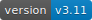
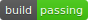
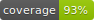

{kind=link}
The Fuck   
Magnificent app which corrects your previous console command, inspired by a @liamosaur tweet.

Few more examples:
➜ apt-get install vim
E: Could not open lock file /var/lib/dpkg/lock - open (13: Permission denied)
E: Unable to lock the administration directory (/var/lib/dpkg/), are you root?
➜ fuck
sudo apt-get install vim [enter/↑/↓/ctrl+c]
[sudo] password for nvbn:
Reading package lists... Done
...➜ git push
fatal: The current branch master has no upstream branch.
To push the current branch and set the remote as upstream, use
git push --set-upstream origin master
➜ fuck
git push --set-upstream origin master [enter/↑/↓/ctrl+c]
Counting objects: 9, done.
...➜ puthon
No command 'puthon' found, did you mean:
Command 'python' from package 'python-minimal' (main)
Command 'python' from package 'python3' (main)
zsh: command not found: puthon
➜ fuck
python [enter/↑/↓/ctrl+c]
Python 3.4.2 (default, Oct 8 2014, 13:08:17)
...➜ git brnch
git: 'brnch' is not a git command. See 'git --help'.
Did you mean this?
branch
➜ fuck
git branch [enter/↑/↓/ctrl+c]
* master➜ lein rpl
'rpl' is not a task. See 'lein help'.
Did you mean this?
repl
➜ fuck
lein repl [enter/↑/↓/ctrl+c]
nREPL server started on port 54848 on host 127.0.0.1 - nrepl://127.0.0.1:54848
REPL-y 0.3.1
...If you are not scared to blindly run the changed command, there is a require_confirmation
settings option:
➜ apt-get install vim
E: Could not open lock file /var/lib/dpkg/lock - open (13: Permission denied)
E: Unable to lock the administration directory (/var/lib/dpkg/), are you root?
➜ fuck
sudo apt-get install vim
[sudo] password for nvbn:
Reading package lists... Done
...Requirements
- python (2.7+ or 3.3+)
- pip
- python-dev
Installation
On OS X you can install The Fuck with Homebrew:
brew install thefuckOn Ubuntu you can install The Fuck with:
sudo apt update
sudo apt install python3-dev python3-pip
sudo -H pip3 install thefuckOn other systems you can install The Fuck with pip:
sudo -H pip install thefuckOr using an OS package manager (OS X, Ubuntu, Arch).
You should place this command in your .bash_profile, .bashrc, .zshrc or other startup script:
eval "$(thefuck --alias)"
# You can use whatever you want as an alias, like for Mondays:
eval "$(thefuck --alias FUCK)"Or in your shell config (Bash, Zsh, Fish, Powershell, tcsh).
Changes will be available only in a new shell session.
To make them available immediately, run source ~/.bashrc (or your shell config file like .zshrc).
Update
sudo -H pip install thefuck --upgradeAliases changed in 1.34.
How it works
The Fuck tries to match a rule for the previous command, creates a new command using the matched rule and runs it. Rules enabled by default are as follows:
ag_literal– adds-Qtoagwhen suggested;aws_cli– fixes misspelled commands likeaws dynamdb scan;cargo– runscargo buildinstead ofcargo;cargo_no_command– fixes wrongs commands likecargo buid;cd_correction– spellchecks and correct failed cd commands;cd_mkdir– creates directories before cd'ing into them;cd_parent– changescd..tocd ..;chmod_x– add execution bit;composer_not_command– fixes composer command name;cp_omitting_directory– adds-awhen youcpdirectory;cpp11– adds missing-std=c++11tog++orclang++;dirty_untar– fixestar xcommand that untarred in the current directory;dirty_unzip– fixesunzipcommand that unzipped in the current directory;django_south_ghost– adds--delete-ghost-migrationsto failed because ghosts django south migration;django_south_merge– adds--mergeto inconsistent django south migration;docker_not_command– fixes wrong docker commands likedocker tags;dry– fixes repetitions likegit git push;fab_command_not_found– fix misspelled fabric commands;fix_alt_space– replaces Alt+Space with Space character;fix_file– opens a file with an error in your$EDITOR;git_add– fixes "pathspec 'foo' did not match any file(s) known to git.";git_bisect_usage– fixesgit bisect strt,git bisect goood,git bisect rset, etc. when bisecting;git_branch_delete– changesgit branch -dtogit branch -D;git_branch_exists– offersgit branch -d foo,git branch -D fooorgit checkout foowhen creating a branch that already exists;git_branch_list– catchesgit branch listin place ofgit branchand removes created branch;git_checkout– fixes branch name or creates new branch;git_diff_no_index– adds--no-indexto previousgit diffon untracked files;git_diff_staged– adds--stagedto previousgit diffwith unexpected output;git_fix_stash– fixesgit stashcommands (misspelled subcommand and missingsave);git_flag_after_filename– fixesfatal: bad flag '...' after filenamegit_help_aliased– fixesgit help <alias>commands replacing with the aliased command;git_not_command– fixes wrong git commands likegit brnch;git_pull– sets upstream before executing previousgit pull;git_pull_clone– clones instead of pulling when the repo does not exist;git_pull_uncommitted_changes– stashes changes before pulling and pops them afterwards;git_push– adds--set-upstream origin $branchto previous failedgit push;git_push_pull– runsgit pullwhenpushwas rejected;git_rebase_no_changes– runsgit rebase --skipinstead ofgit rebase --continuewhen there are no changes;git_rm_local_modifications– adds-for--cachedwhen you try torma locally modified file;git_rm_recursive– adds-rwhen you try torma directory;git_rebase_merge_dir– offersgit rebase (--continue | --abort | --skip)or removing the.git/rebase-mergedir when a rebase is in progress;git_remote_seturl_add– runsgit remote addwhengit remote set_urlon nonexistant remote;git_stash– stashes you local modifications before rebasing or switching branch;git_two_dashes– adds a missing dash to commands likegit commit -amendorgit rebase -continue;go_run– appends.goextension when compiling/running Go programs;gradle_no_task– fixes not found or ambiguousgradletask;gradle_wrapper– replacesgradlewith./gradlew;grep_arguments_order– fixes grep arguments order for situations likegrep -lir . test;grep_recursive– adds-rwhen you trying togrepdirectory;grunt_task_not_found– fixes misspelledgruntcommands;gulp_not_task– fixes misspelledgulptasks;has_exists_script– prepends./when script/binary exists;heroku_not_command– fixes wrongherokucommands likeheroku log;history– tries to replace command with most similar command from history;java– removes.javaextension when running Java programs;javac– appends missing.javawhen compiling Java files;lein_not_task– fixes wrongleintasks likelein rpl;ln_no_hard_link– catches hard link creation on directories, suggest symbolic link;ln_s_order– fixesln -sarguments order;ls_all– adds-Atolswhen output is empty;ls_lah– adds-lahtols;man– changes manual section;man_no_space– fixes man commands without spaces, for examplemandiff;mercurial– fixes wronghgcommands;mkdir_p– adds-pwhen you trying to create directory without parent;mvn_no_command– addsclean packagetomvn;mvn_unknown_lifecycle_phase– fixes misspelled lifecycle phases withmvn;npm_missing_script– fixesnpmcustom script name innpm run-script <script>;npm_run_script– adds missingrun-scriptfor customnpmscripts;npm_wrong_command– fixes wrong npm commands likenpm urgrade;no_command– fixes wrong console commands, for examplevom/vim;no_such_file– creates missing directories withmvandcpcommands;open– either prependshttp://to address passed toopenor create a new file or directory and passes it toopen;pip_unknown_command– fixes wrongpipcommands, for examplepip instatl/pip install;port_already_in_use– kills process that bound port;python_command– prependspythonwhen you trying to run not executable/without./python script;python_execute– appends missing.pywhen executing Python files;quotation_marks– fixes uneven usage of'and"when containing args';react_native_command_unrecognized– fixes unrecognizedreact-nativecommands;remove_trailing_cedilla– remove trailling cedillasç, a common typo for european keyboard layouts;rm_dir– adds-rfwhen you trying to remove directory;sed_unterminated_s– adds missing '/' tosed'sscommands;sl_ls– changessltols;ssh_known_hosts– removes host fromknown_hostson warning;sudo– prependssudoto previous command if it failed because of permissions;switch_lang– switches command from your local layout to en;systemctl– correctly orders parameters of confusingsystemctl;test.py– runspy.testinstead oftest.py;touch– creates missing directories before "touching";tsuru_login– runstsuru loginif not authenticated or session expired;tsuru_not_command– fixes wrongtsurucommands liketsuru shell;tmux– fixestmuxcommands;unknown_command– fixes hadoop hdfs-style "unknown command", for example adds missing '-' to the command onhdfs dfs ls;vagrant_up– starts up the vagrant instance;whois– fixeswhoiscommand;workon_doesnt_exists– fixesvirtualenvwrapperenv name os suggests to create new.
Enabled by default only on specific platforms:
apt_get– installs app from apt if it not installed (requirespython-commandnotfound/python3-commandnotfound);apt_get_search– changes trying to search usingapt-getwith searching usingapt-cache;apt_invalid_operation– fixes invalidaptandapt-getcalls, likeapt-get isntall vim;brew_install– fixes formula name forbrew install;brew_link– adds--overwrite --dry-runif linking fails;brew_uninstall– adds--forcetobrew uninstallif multiple versions were installed;brew_unknown_command– fixes wrong brew commands, for examplebrew docto/brew doctor;brew_update_formula– turnsbrew update <formula>intobrew upgrade <formula>;brew_upgrade– appends--alltobrew upgradeas per Homebrew's new behaviour;pacman– installs app withpacmanif it is not installed (usesyaourtif available);pacman_not_found– fixes package name withpacmanoryaourt.
Bundled, but not enabled by default:
git_push_force– adds--force-with-leaseto agit push(may conflict withgit_push_pull);rm_root– adds--no-preserve-roottorm -rf /command.
Creating your own rules
For adding your own rule you should create your-rule-name.py
in ~/.config/thefuck/rules. The rule should contain two functions:
match(command: Command) -> bool
get_new_command(command: Command) -> str | list[str]Also the rule can contain an optional function
side_effect(old_command: Command, fixed_command: str) -> Noneand optional enabled_by_default, requires_output and priority variables.
Command has three attributes: script, stdout, stderr and script_parts.
Rule shouldn't change Command.
Rules api changed in 3.0: For accessing settings in rule you need to import it with from thefuck.conf import settings.
settings is a special object filled with ~/.config/thefuck/settings.py and values from env (see more below).
Simple example of the rule for running script with sudo:
def match(command):
return ('permission denied' in command.stderr.lower()
or 'EACCES' in command.stderr)
def get_new_command(command):
return 'sudo {}'.format(command.script)
# Optional:
enabled_by_default = True
def side_effect(command, fixed_command):
subprocess.call('chmod 777 .', shell=True)
priority = 1000 # Lower first, default is 1000
requires_output = TrueMore examples of rules, utility functions for rules, app/os-specific helpers.
Settings
The Fuck has a few settings parameters which can be changed in $XDG_CONFIG_HOME/thefuck/settings.py ($XDG_CONFIG_HOME defaults to ~/.config):
rules– list of enabled rules, by defaultthefuck.conf.DEFAULT_RULES;exclude_rules– list of disabled rules, by default[];require_confirmation– requires confirmation before running new command, by defaultTrue;wait_command– max amount of time in seconds for getting previous command output;no_colors– disable colored output;priority– dict with rules priorities, rule with lowerprioritywill be matched first;debug– enables debug output, by defaultFalse;history_limit– numeric value of how many history commands will be scanned, like2000;alter_history– push fixed command to history, by defaultTrue;wait_slow_command– max amount of time in seconds for getting previous command output if it inslow_commandslist;slow_commands– list of slow commands.
Example of settings.py:
rules = ['sudo', 'no_command']
exclude_rules = ['git_push']
require_confirmation = True
wait_command = 10
no_colors = False
priority = {'sudo': 100, 'no_command': 9999}
debug = False
history_limit = 9999
wait_slow_command = 20
slow_commands = ['react-native', 'gradle']Or via environment variables:
THEFUCK_RULES– list of enabled rules, likeDEFAULT_RULES:rm_rootorsudo:no_command;THEFUCK_EXCLUDE_RULES– list of disabled rules, likegit_pull:git_push;THEFUCK_REQUIRE_CONFIRMATION– require confirmation before running new command,true/false;THEFUCK_WAIT_COMMAND– max amount of time in seconds for getting previous command output;THEFUCK_NO_COLORS– disable colored output,true/false;THEFUCK_PRIORITY– priority of the rules, likeno_command=9999:apt_get=100, rule with lowerprioritywill be matched first;THEFUCK_DEBUG– enables debug output,true/false;THEFUCK_HISTORY_LIMIT– how many history commands will be scanned, like2000;THEFUCK_ALTER_HISTORY– push fixed command to historytrue/false;THEFUCK_WAIT_SLOW_COMMAND– max amount of time in seconds for getting previous command output if it inslow_commandslist;THEFUCK_SLOW_COMMANDS– list of slow commands, likelein:gradle.
For example:
export THEFUCK_RULES='sudo:no_command'
export THEFUCK_EXCLUDE_RULES='git_pull:git_push'
export THEFUCK_REQUIRE_CONFIRMATION='true'
export THEFUCK_WAIT_COMMAND=10
export THEFUCK_NO_COLORS='false'
export THEFUCK_PRIORITY='no_command=9999:apt_get=100'
export THEFUCK_HISTORY_LIMIT='2000'Developing
Install The Fuck for development:
pip install -r requirements.txt
python setup.py developRun unit tests:
py.testRun unit and functional tests (requires docker):
py.test --enable-functionalFor sending package to pypi:
sudo apt-get install pandoc
./release.pyLicense MIT
Project License can be found here.